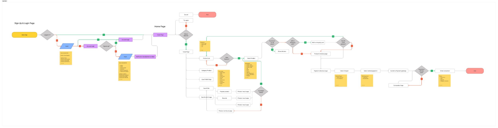
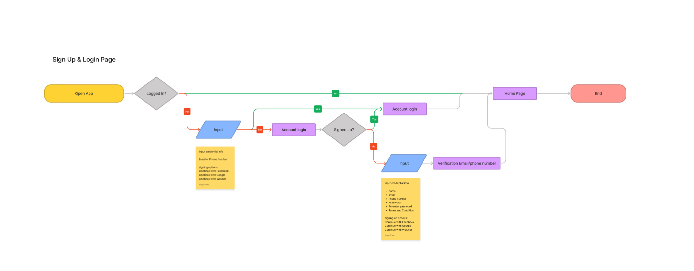
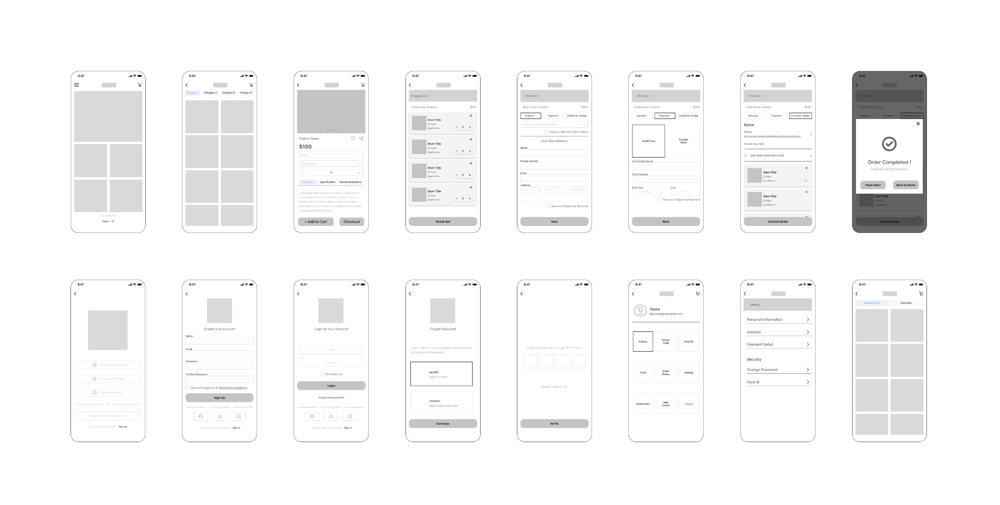
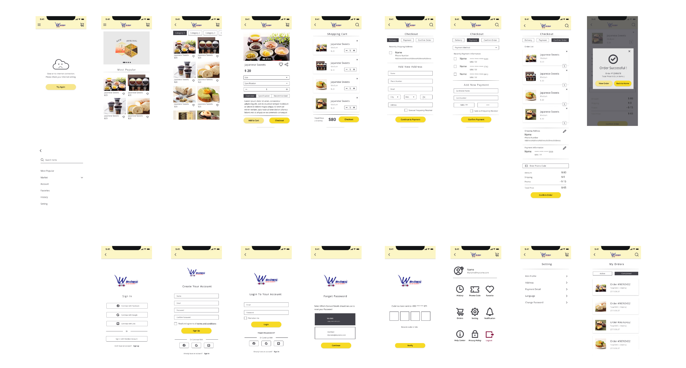

UI/UX Design | User Flow | Wireframing | Mockups
This e-commerce app project is about building a universally platform for different brand retailers. Its aim is helping small and medium sized stores to have their own e-commerce platforms rapidly and low cost.
I was one of two designer in this project working with a team of product managers and six engineers.
We began creating the user flow to identify the needs of the customers and retailers in the whole selling process.
 I created the low fidelity wireframes based on the user flow to continue working out the user experience and information architecture of the application.
After several rounds of iteration of user flows, we optimized the features and created more efficeint and intuitive flows.
The feedback we received from retailers was extremely positive, with many noting the convenience of having their own e-commerce app.
We’ve also seen the shoppers could be increasing in retention and engagement when their favorite local retailers has own e-commerce platform.
This project is my first App project during the freelance period. There was different experience between the development of App and web.
Users are touching the UI and manipulating objects in using mobile App, but browing the website probably use mouse or trackpad to interact with the interface.
It would be affected the UI design, such as the placement for buttons.